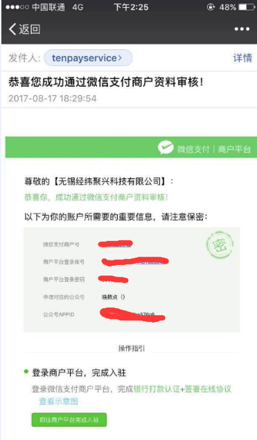
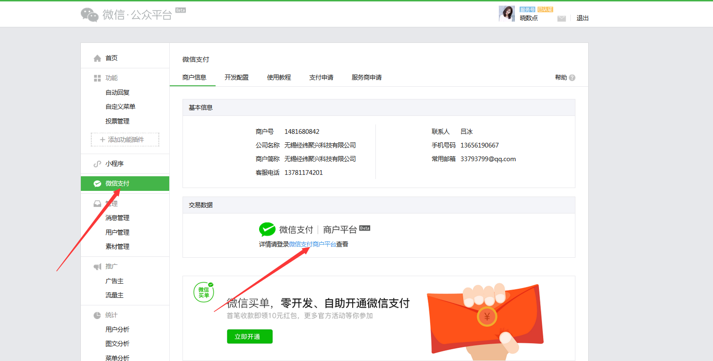
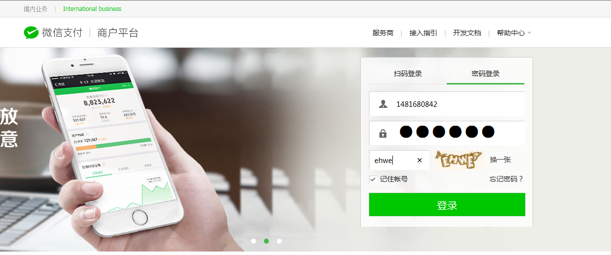
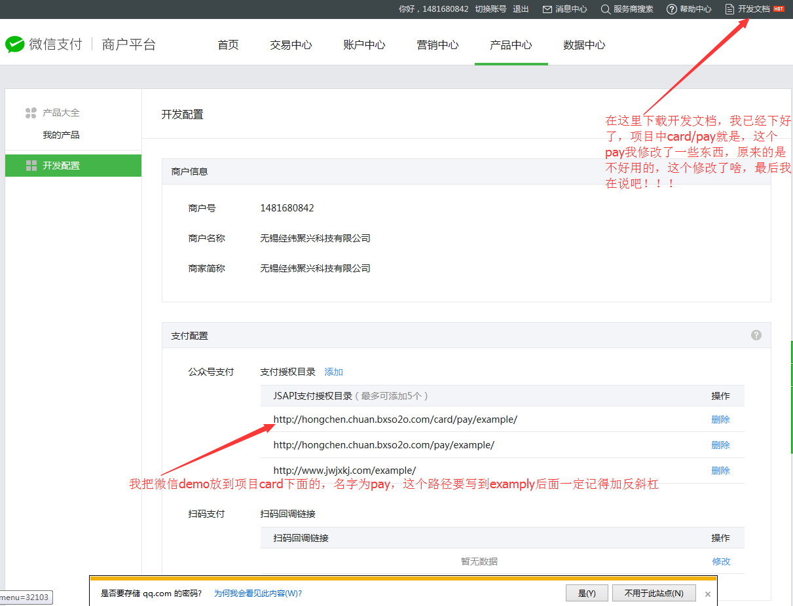
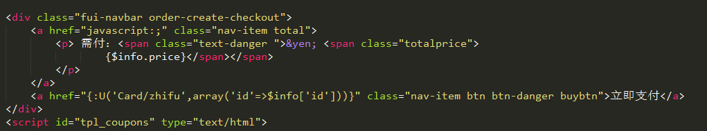
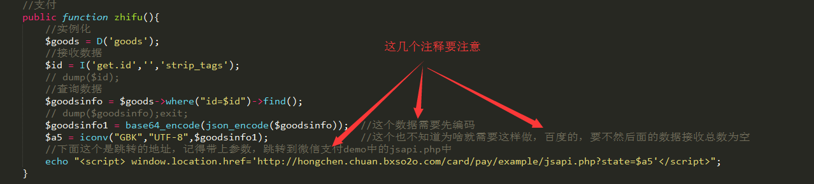

希望对你能有所帮助！！！
做这个前提是已经成功开通了微信支付，开通后会有以下信息

第一步：登录微信公众平台，点击 "微信支付" 中的 "微信支付商户平台"

第二步：密码登录（此时为减少不必要的麻烦，建议用IE浏览器，你也可以试一试用其他浏览器，如果可以告诉我怎么做到的，嘿嘿。。。）

第三步：下载开发文档：点开开发文档->微信公众号支付->SDK与DEMO下载->下载PHP版本。我的重命名为pay，
放在card项目里,并配置支付授权目录，这个时候基本资料都有啦！！！！！

第四步：这个时候就是该写代码喽！！！当你点击立即支付的时候跳转到控制器一个方法中，这个时候你就需要查询数据库，顾客支付的是啥


第五步：代开jsapi.php， 21行为你接收的数据，22行如果打开支付的时候就会把一些信息当做背景说明，当你取消支付的时候就可以看到你购买的是啥
36行代码需要你把hongchen.chuan.bxso2o.com/card改成自己的
26~38行好好看看，77行为支付成功后，需要跳转的地方，这个时候该看notify.php文件了
59~62;62行改成自己的,这个是支付成功后需要修改数据库信息的控制器方法，我的这个方法写的比较多，你直接看就行
对着项目看，公众号是"晓数点"（如果有先取消关注，再关注，不过在这个时候要先告诉我，我怕我没有开服务器，哈哈，，）;数据库是card/card.sql;
这个时候就大功告成了，如果还不懂就问我，嘿嘿。。。。。